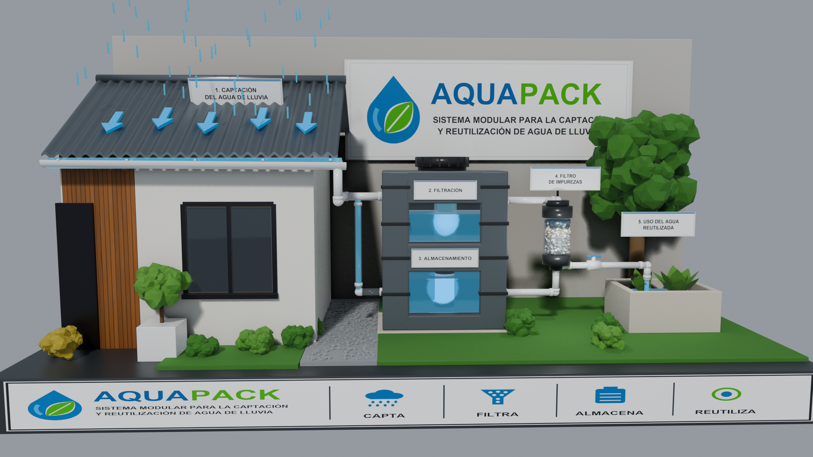
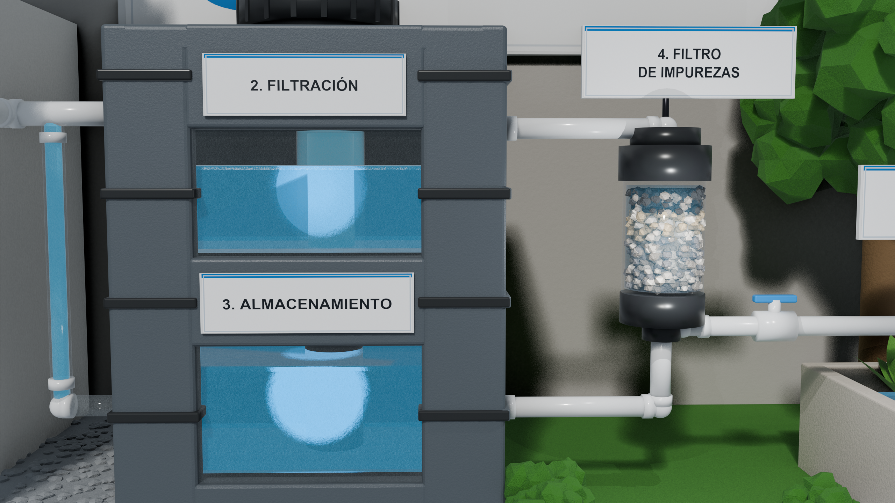
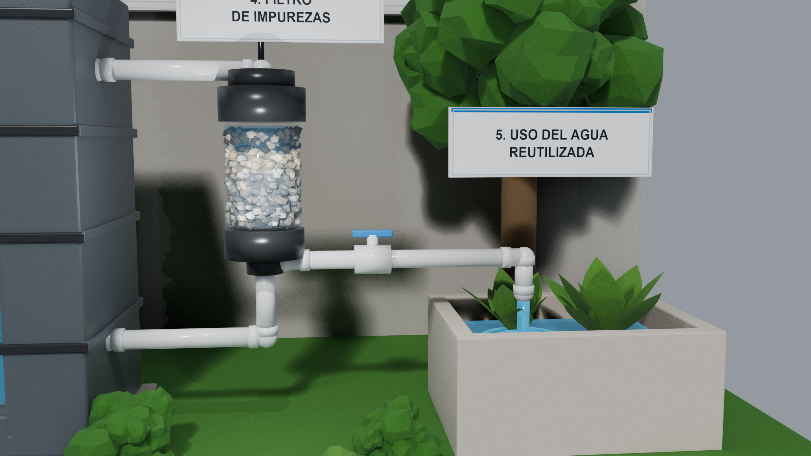

Renders generados directamente del archivo maestro aquapack_master.blend en resolución 2560×1440 y secuencia animada MP4.
Simulación continua de 180 fotogramas: captación en tejado, llenado progresivo de cámaras modulares, filtrado y riego.

Integración completa del sistema AQUAPACK junto a la vivienda, cartel corporativo y zócalo de etapas.

Visores acrílicos transparentes mostrando la columna interna de decantación (Módulo 2) y la reserva hídrica (Módulo 3).

Cartucho transparente con lecho estratificado (carbón activado, arena sílice y grava), llave de paso azul y jardinera.